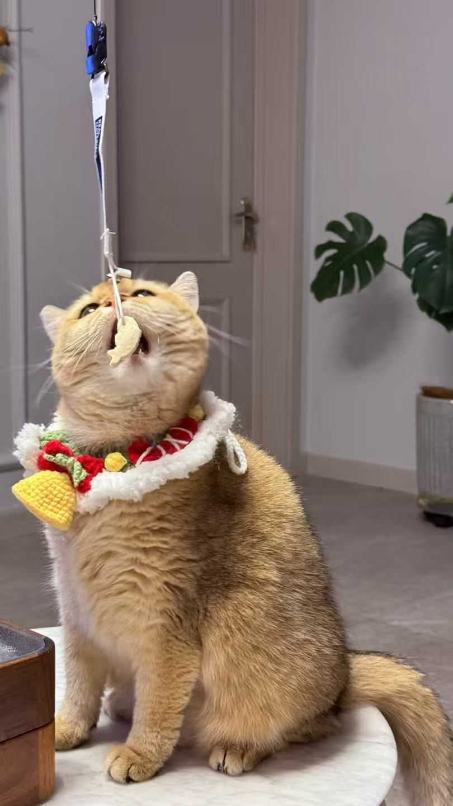
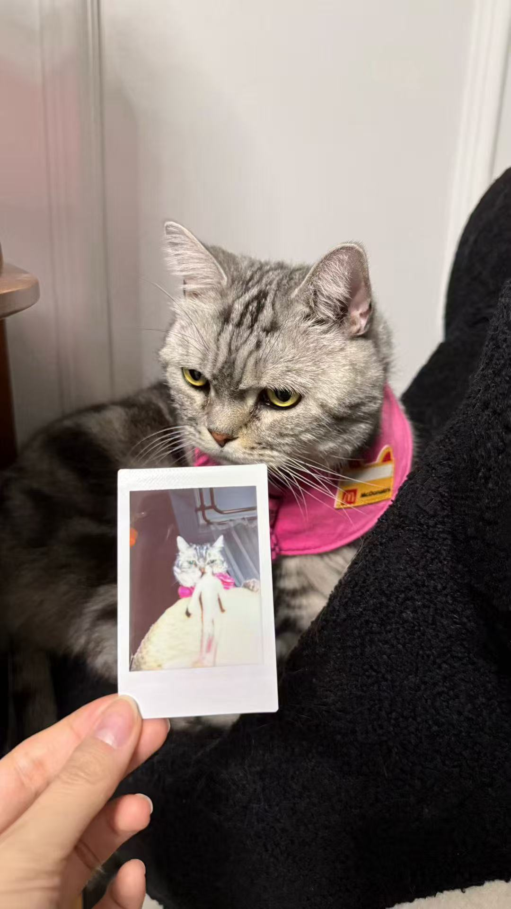

Cats are detail.
Cats are repetition.
Cats are small changes you notice only after living with them for a while.
My cat does not behave like a “character”.
It behaves like a real animal with moods.
Some mornings it is gentle.
Some afternoons it acts like it has endless energy.
At night it becomes quiet, like the whole room is a little darker because it decided so.
A cat chooses where to place its body.
It chooses distance.
It chooses timing.
It chooses attention.
Sometimes my cat follows me.
Sometimes it ignores me completely.
Sometimes it sits in the doorway like a soft checkpoint.
Sometimes it sleeps so deeply it looks unreal.
This page is still just about one cat.
(click the top-right image to go back)
Cats are small, agile carnivorous mammals known for their sharp senses and independent yet affectionate nature.
But my cat is not “a cat in general”.
It is a specific one.
A specific face.
A specific mood.
A specific rhythm of daily life.

